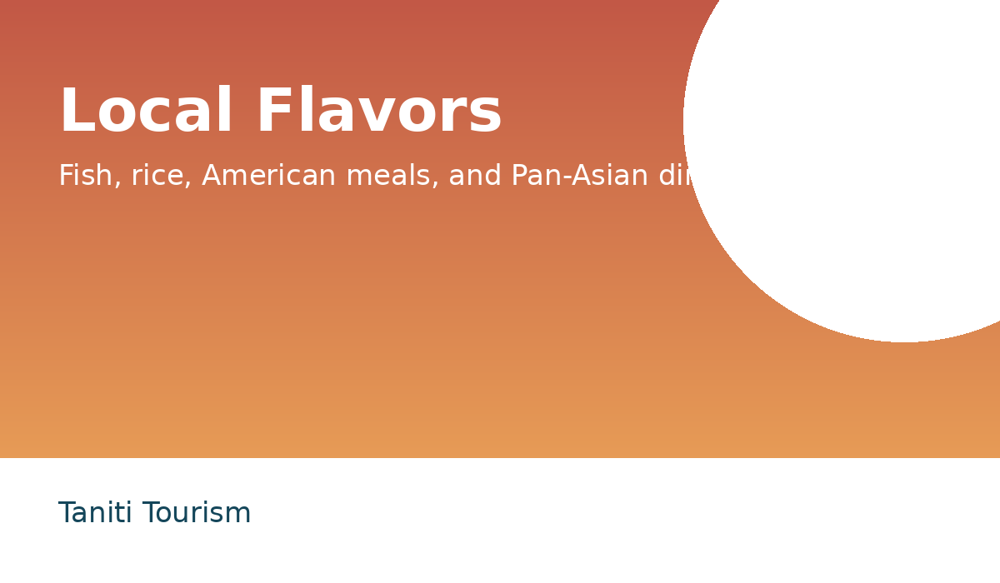

Food and Shopping
Taniti has ten restaurants: local fish and rice restaurants, American-style restaurants, and Pan-Asian restaurants.

Groceries
Travelers can use two supermarkets, two smaller grocery stores, and a convenience store open 24 hours a day.